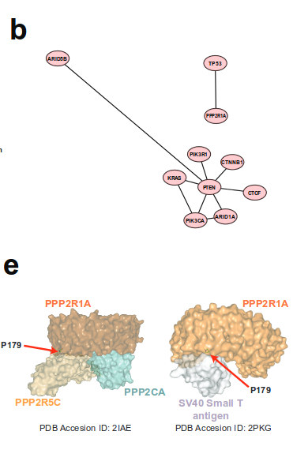

Viirused ja onkogeenid
Onkobioloogia
Taavi Päll
lektor, Tallinna Tehnikaülikool
Tuumor-onkoviiruste avastamine
Lindude leukeemia viraalne ülekanne
- 1908 aastal näitasid Taani teadlased Vilhelm Ellerman (1871-1924) ja Oluf Bang (1881-1937) et lindude leukeemia (avian viral leukemia) kandub viraalsel teel üle.

Rousi kana sarkoomi mudel
- Aastatel 1909-11 katsetas Francis Peyton Rous (1879-1970) kana sarkoomiga.
- Rous leidis, et seda tuumorit on võimalik kanadel üle kanda vähi rakkudest sõltumatult.
- Rous pälvis selle töö eest 1966. aastal Nobeli preemia.


Peale esialgseid avastusi oli onkoviiruste alal tükk aega vaikus
1930-ndatel kirjeldati Richard E. Shope (1901-1966) and E. Weston Hursti (1900-1980) poolt küülikute papilloomiviirus ja John Joseph Bittneri poolt (1904-1961) hiirte piimanäärme viirus (mouse mammary tumor virus, MMTV).
1950-ndatel avastati Ludwig Grossi (1904-1999) poolt hiirte leukeemiaviirus (retroviirus) ja hiirte polüoomiviirus
Vähk võib olla nakkav

Möödunud sajandi 50-ndatel aastatel, kui oli hiirte peal leitud seosed leukeemia ja viirusnakkuse vahel, tekkis hüpotees, et vähk on viirushaigus.
Viirused põhjustavad rakkude transformatsiooni
Rousi sarkoomiviirus muudab fibroblaste
1950-ndate lõpus ja 1960-ndatel uurisid Harry Rubin ja Howard Temin Rousi sarkoomiviirust (RSV) koekultuuris, kasutades kana fibroblaste (CEF)

Tähelepanekud:
- RSV nakatatud CEF-id moodustavad kolooniad (foci/clusters)
- kolooniaid moodustavad rakud on muutunud morfoloogiaga (trasformeerunud) ja sarnanevad sarkoomi rakkudega
Transformeerunud rakkude iseloomulikud omadused
- kontakt-inhibitsiooni kadumine
- sõltumatus adhesioonist (anchorage independence) -- rakud kasvavad mitmes kihis
- poolduvad ~lõpmatult (immortaliseerumine)
- sõltumatus kasvufaktoritest, rakkude jagunemine ei arresteeru kasvufaktorite eemaldamisel
- kõrge gükoositransport
- tumorigeensus: moodustavad peremees-loomas tuumoreid
Vähki indutseeriva toimega on väga erinevad viirused
| Tuumorviirus | Viirusperekond | Genoomi suurus (kb) |
|---|---|---|
| DNA viirused | ||
| B-hepatiidi viirus (HBV) | hepadna | 3 |
| SV40/polüoomi (polyoma) | papova | 5 |
| inimese papilloomiviirus 16 (HPV) | papova | 8 |
| inimese adenoviirus 5 | adenoviirus | 35 |
| inimese herpesviirus 8 (HSV-8; KSHV) | herpesviirused | 165 |
| Shope fibroomiviirus | poxviirused | 160 |
| RNA viirused | ||
| Rousi sarkoomiviirus (RSV) | retroviirused | 9 |
| inimese T-raku leukeemia viirus (HTLV-I) | retroviirus | 9 |
Inimesel otsiti vähkidest pikalt RSV sarnast lihtsat retroviirust, kuid vähiga seoses leiti ainult komplekssed retroviirused nagu HTLV-I ja HIV-1/-2.
Seitse viirust
- Praegusel ajal hinnatakse, et viirused vastutavad 10-15% vähijuhtumite eest maailmas.
- Inimestel on leitud seitsmel viirusel seos vähi tekkega.

Inimese kasvaja-viirused
| Viirus | Genoom | Kasvaja | Esmakirjeldus |
|---|---|---|---|
| Epstein-Barr viirus (EBV; human herpesvirus 4) | dsDNA herpesviirus | Burkitt'i lümfoom | 1964 |
| B-hepatiidi viirus (HBV) | ss/dsDNA hepadenoviirus | maksa kartsinoomid | 1965 |
| inimese T-lümfotroopne viirus I (HTLV-I) | pluss-ahelaline ssRNA retroviirus | T-rakuline leukeemia | 1980 |
| inimese papilloomiviirused (HPV) 16 ja -18 | dsDNA papilloomiviirus | emakakaela (cervical) vähk, peenisekasvajad, anogenitaal- ja pea-kaela kasvajad | 1983-84 |
| C-hepatiidi viirus (HCV) | pluss-ahelaline ssRNA flaviviirus | maksa kartsinoomid ja lümfoomid | 1989 |
| Kaposi sarkoomi herpesviirus (KSHV; ; human herpesvirus 8) | dsDNA herpesviirus | Kaposi sarkoom, kehaõõne-lümfoom | 1994 |
| Merkeli rakkude polüoomiviirus | dsDNA polüoomiviirus | Merkeli rakkude kartsinoom | 2008 |
Inimese kasvajaviirused on kõik eri klassidest ja hõlmavad kogu viirus-spektrit
Epstein-Barri viirus (EBV)
- EBV partiklid avastati elektronmikroskoopia teel nn. Aafrika Burkitti lümfoomi patsientidel.
- EBV on laialt levinud ekvatoriaal Aafrikas ja Paapua Uus-Guineas.
- Ainult 2.3% lümfoomidest on nn. Burkitti lümfoomid.
- ~100% patsientidest nakatunud.
- võib kaasneda malaariast või kollapalavikust tingitud immuun-puudulikkusega.
- Sporaadiline Burkitti lümfoom esineb arenenud maades.
- EBV negatiivne, kuid sisaldab iseloomulikke MYC-i translokatsioone.

Kasvajates reeglina viiruspartikleid ei leita
- Lisaks EBV-le on veel ainult üks inimese onkoviirus (T-lümfotroopne viirus I, HTLV-I) tuumorites kirjeldatud kasutades klassikalisi viroloogi töövahendeid: mikroskoopi ja viiruskultuuri.
- B hepatiidi seos maksakartsinoomiga tehti kindlaks 22707 Taiwani meest hõlmavas populatsiooniuuringus.
- HPV-16/18, C hepatiidi, Kaposi sarkoomi ja Merkeli rakkude polüoomiviirus identifitseeriti kasvajates molekulaarbioloogia meetodeid kasutades.
HPV ja emakakaelavähk
- 1980-ndatel oli teada, et inimese papilloomiviirused põhjustavad kondüloomide (genital warts) teket.
- Selle põhal oletas Harald zur Hausen, et HPV võib olla seotud ka emakakaela vähi tekkega.
- Oma hüpoteesi kontrollimiseks hübridiseeris ta papilloomiviiruse DNA emakakaelavähi DNA-le.

Kaposi sarkoom ja AIDS
Enne AIDSi epideemiat oli Kaposi sarkoom üliharuldane.

HIV ise ei ole tumorigeenne, kuid loob immuunpuudulikkuse näol keskkonna kasvaja-viiruste "kapist välja" tulemiseks.
Viiruste vähimehhanismid
Viirused põhjustavad kasvajaid mitut moodi
Mehhanismid langevad kahte laia kategooriasse.
otsene mehhanism: insertsiooniline mutagenees, onkviirused nakatavad normaalseid rakke ja integreeruvad genoomi põhjustades muutunud lokaalset geeniekspressiooni. Kui rakud koguvad veel lisamutatsioone või leiab aset immuunsüsteemi nõrgenemine, siis võivad sellised rakud viia vähi tekkeni.
kaudne mehhanism, viirusinfektsioon põhjustab põletikku. Krooniline põletik tõstab vähitekke riski selles koes.
src paradigma
Põhinedes RSV võimel mõni päev peale nakatamist rakke transformeerida, töötati 1958 Temini a Rubini poolt välja nn focus assay
- Fookuste hulk oli otseses seoses rakkudele lisatud RSV hulgaga, seega oli RSV täiesti piisav peremeesraku transformeerimiseks.
Paljunemine ja raku transformeerimine on viirusel eraldi funktsioonid
raku fenotüüp on viiruse genoomi kontrolli all, on olemas RSV mutandid, mis põhjustavad transformeerimisel rakkudel pikenenud fenotüübi;
viiruse paljunemine pole raku transformatsiooniks vajalik, replikatsiooni-defektne mutant transformeeris rakke ilma viirust tootmata;
tekivad spontaansed mutandid mis replitseeruvad kuid enam ei transformeeri, enamus RSV liine on mitte-defektsed (neil on genoomis olemas kõik viiruse replikatsiooniks vajalikud geenid ja onkogeen).
RSV geenide aktiivsus on vajalik transformatsiooniks
RSV-indutseeritud transformatsioon kandub järglasrakkudele edasi.
Kas tegemist on nn. hit and run mehhanismiga või on viiruse aktiivsus transformatsiooniks permanentselt vajalik
- hit and run: transformeerunud fenotüüp kandub edasi juba viirusest sõltumatult.
Viirusgeenide vajalikkus selgus 1970 kui avaldati Nature artikkel kus kirjeldati temperatuuritundliku (ts) RSV mutandiga tehtud katseid:
- transformatsioon oli temperatuuritundlik, kuid viiruse replikatsioon mitte.
ALV/RSV virion

Metsik tüüpi RSV vs. transformatsioonidefektne (td)
td RSV genoom on väiksem

Lihtsa retroviiruse elutsükkel

RSV src pärineb raku genoomist
Kasutades ära 1970 aastal RSV-st avastatud RNA sõltuvat DNA polümeraasi (pöördtranskriptaas) näidati, et selles viiruses olev transformeeriv src RNA järestus on pärit linnu genoomist.
The Nobel Prize in Physiology or Medicine 1975 was awarded jointly to David Baltimore, Renato Dulbecco and Howard Martin Temin "for their discoveries concerning the interaction between tumour viruses and the genetic material of the cell".

Retroviiruste onkovalkude funktsionaalsed klassid
| Klass | Näide | Viirus |
|---|---|---|
| kasvufaktor | Sis (PDGFB) | ahvi sarkoomiviirus |
| retseptor TK | ErbB (EGFR) | linnu erütroblastoosi viirus |
| hormoonretseptor | ErbA (THRA) | linnu erütroblastoosi viirus |
| G valk | Ha-ras, GTPase | Harvey sarkoomiviirus |
| Ki-ras, GTPase | Kirsten sarkoomiviirus | |
| adaptorvalk | Crk, modulaarne signaali link CT10 | linnu sarkoomiviirus |
| mitte-retseptor TK | Src, tsütoplasma kinaas | Rousi sarkoomiviirus |
| Abl, tsütoplasma kinaas | Abelsoni hiire leukemia virus | |
| seriin/treoniin kinaas | Akt, tsütoplasma kinaas | Akt8 hiire thymoma virus |
| Mos, tsütoplasma kinaas | Moloney hiire sarkoomiviirus | |
| transkriptsiooni regulaator | Jun, AP1 TF kompleks | linnu sarkoomiviirus 17 |
| Fos, AP1 TF kompleks | Finkel–Biskis–Jinkins hiire sarkoomiviirus | |
| Myc, transkriptsioonifaktor | linnu müelotsütomatoosi viirus MC29 | |
| lipiidikinaas | Pi3k | linnu sarkoomiviirus 16 |
Ka mitte transformeerivad viirused võivad aktiveerida proto-onkogeene genoomi insertsioonil
| Geen | Viirus | Kasvaja | Liik | Onkovalk |
|---|---|---|---|---|
| myc | ALV | B-raku lümfoom | kana | transkriptsiooni faktor |
| myc | ALV, FeLV | T-raku lümfoom | kana, kass | transkriptsiooni faktor |
| nov | ALV | nefroblastoom | kana | kasvufaktor |
| erbB | ALV | erütroblastoos | kana | retseptor TK |
| int-1 (Wnt-1) | MMTV | rinnanäärme kartsinoom | hiir | kasvufaktor |
| int-2 (FGF) | MMTV | rinnanäärme kartsinoom | hiir | kasvufaktor |
| int-3 (notch) | MMTV | rinnanäärme kartsinoom | hiir | retseptor |
| pim-1 | Mo-MLV | T-raku lümfoom | hiir | ser/thr kinaas |
| bmi-1 | Mo-MLV | T-raku lümfoom | hiir | transkriptsiooni repressor |
| tpl-2 | Mo-MLV | T-raku lümfoom | hiir | mitte-retseptor TK |
| lck | Mo-MLV | T-raku lümfoom | hiir | mitte-retseptor TK |
| p53 | Mo-MLV | T-raku lümfoom | hiir | transkriptsioonifaktor |
| IL2 | GaLV | T-raku lümfoom | gibbon ape | tsütokiin |
| K-ras | F-MLV | T-raku lümfoom | hiir | väike G valk |
| CycD1 | F-MLV | T-raku lümfoom | hiir | G1 tsükliin |
Viiruse onkogeenid: RNA versus DNA viirused
Retroviiruste onkogeenid on rakulist päritolu ja peamiselt dereguleerivad signalisatsiooni ja transkriptsiooni kontrolli (SRC, MYC, RAS, ERBB).
Onkogeensed DNA viirustel on aga genoomis isiklikud onkogeenid: HPV E6, SV40 LT (large T).
DNA viiruste onkogeenid toimivad rakuliste kontrollmehhanismide blokeerimise teel, nt. HPV E6 ja SV40 LT inhibeerivad p53, HPV E7 inhibeerib RB-d.
Viiruse onkovalkude päritolu
Kas (i) viirus paneb rakulise jagunemise masinavärgi tööle selleks, et paljuneda või (ii) üritab immunsüsteemile märkamatuks jääda.

- Viiruse onkogeenid inhibeerivad raku tuumor-supressor funktsioone (piiratud ressursid), et tagada viiruse paljunemine ja vähi teke on tingitud juhuslikest mutatsioonidest.
- Viiruse strateegia on peremehe kaasasündinud (innate) immuunsuse vaiki hoidmine: tuumorsuppressorid on hõivatud ka kaasasündinud immuunsuses.
Landscape of genomic alterations in cervical carcinomas
Relationships between HPV integration, copy-number amplifications and gene expression in cervical carcinoma
- HPV integration occurred closer to amplified regions than expected by chance.
- Viral integration was localized to one locus in most tumours investigated.
- Many of the genes involved in the integration events are members of cellular pathways known to have important roles in cancer.

Altered immune response in cervical carcinomas
- Mutations in the HLA-B, HLA-A and in the β2-microglobulin (B2M) genes.
- All mutations in these three genes were within the antigen-presenting domains of each respective protein.
- Pathway analyses also revealed that the most significantly mutated gene set in squamous cell carcinomas involves immune response genes in the interferon-γ signalling pathway, including mutations in IFNG and JAK2.
- Together, these data highlight the significance of the synergy between HPV infection and an altered immune response in squamous cell carcinomas of the cervix.
SV40 kasutab samu mehhanisme mis toimivad spontaansetes kasvajates
- The co-occurrence of PPP2R1A and TP53 mutations mirrors the dual mechanism of transformation by the SV40 oncovirus.
- Small T antigen binds PPP2R1A to disrupt association with PP2A regulatory subunits
- and large T antigen mediates TP53 inactivation.

Comprehensive molecular characterization of gastric adenocarcinoma
- EBV is found within malignant epithelial cells in 9% of gastric cancers.
- Amplification of 9p locus containing JAK2, CD274 and PDCD1LG2 was enriched in the EBV subgroup (15% of tumours).
- JAK2 encodes a receptor tyrosine kinase and potential therapeutic target.
- CD274 and PDCD1LG2 encode PD-L1 and PD-L2, immunosuppressant proteins.

Viited
- Why do viruses cause cancer? Highlights of the first century of human tumour virology Patrick S. Moore & Yuan Chang Nature Reviews Cancer 10, 878-889 (December 2010) doi:10.1038/nrc2961
- Retroviral oncogenes: a historical primer Peter K. Vogt Nature Reviews Cancer 12, 639-648 (September 2012) doi:10.1038/nrc3320
- The Biology of Cancer Robert A. Weinberg Garland Science (2007) ISBN: 9780815340782
- Landscape of genomic alterations in cervical carcinomas Nature 506, 371–375 (20 February 2014) doi:10.1038/nature12881
- Comprehensive molecular characterization of gastric adenocarcinoma The Cancer Genome Atlas Research Network Nature 513, 202–209 (11 September 2014) doi:10.1038/nature13480